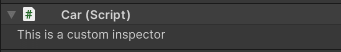
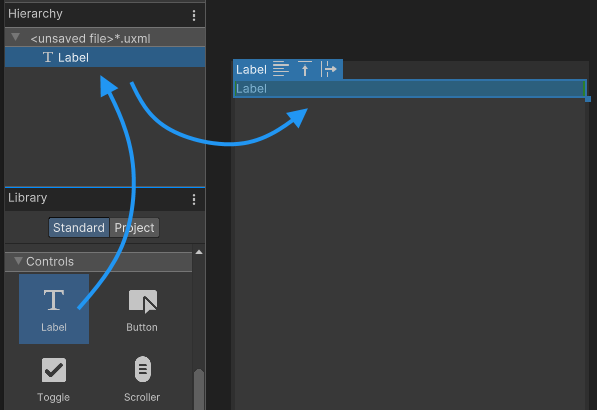
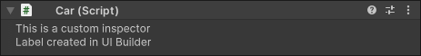
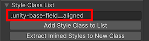
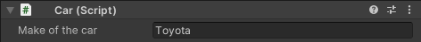
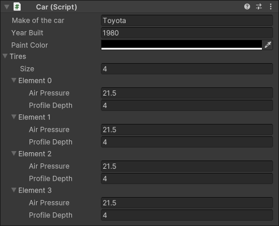
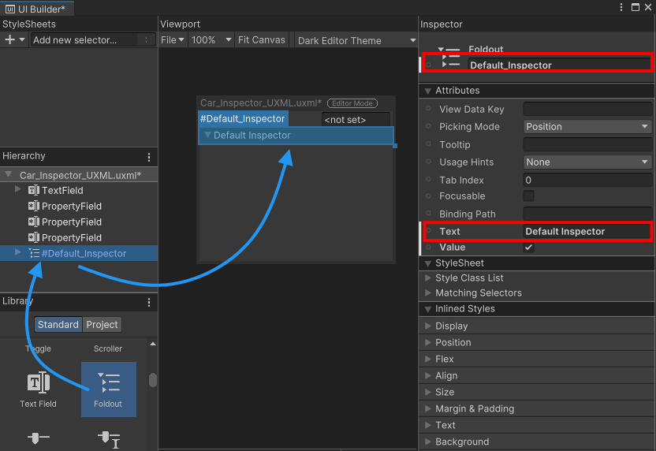

Although there is a default InspectorA Unity window that displays information about the currently selected GameObject, asset or project settings, allowing you to inspect and edit the values. More info See in Glossary for your MonoBehaviours and ScriptableObjects, you might want to write a custom Inspector for your classes. A custom Inspector can help you do the following:
Create a more user-friendly representation of script properties.
Organize and group properties together.
Display or hide sections of the UI(User Interface) Allows a user to interact with your application. Unity currently supports three UI systems. More info See in Glossary depending on the user’s choices.
Provide additional information about the meaning of individual settings and properties.
Example overview
This example creates a custom Inspector for a MonoBehaviour class. It uses both C# scriptsA piece of code that allows you to create your own Components, trigger game events, modify Component properties over time and respond to user input in any way you like. More info See in Glossary and UI Builder to create the UI. The custom Inspector also features a custom property drawerA Unity feature that allows you to customize the look of certain controls in the Inspector window by using attributes on your scripts, or by controlling how a specific Serializable class should look More info See in Glossary.
The custom Inspector displays the properties of a Car class, including the make, year built, color, and a list of tires. The Inspector uses a PropertyField control to display the properties of the Car class, and a custom property drawer to display the properties of the Tire class.
You can find the completed files that this example creates in this GitHub repository.
Prerequisites
This guide is for developers familiar with the Unity Editor, UI Toolkit, and C# scripting. Before you start, get familiar with the following:
Visual TreeAn object graph, made of lightweight nodes, that holds all the elements in a window or panel. It defines every UI you build with the UI Toolkit. See in Glossary
To create a custom Inspector, first define a custom class that inherits from a MonoBehaviour. The custom class represents a simple car with several properties.
Create a project in Unity with any template.
In your Project windowA window that shows the contents of your Assets folder (Project tab) More info See in Glossary, create a folder named create-a-custom-inspector to store all your files.
Create a C# script named Car.cs with the following content:
using UnityEngine;
public class Car : MonoBehaviour
{
public string m_Make = "Toyota";
public int m_YearBuilt = 1980;
public Color m_Color = Color.black;
}
Create a new GameObjectThe fundamental object in Unity scenes, which can represent characters, props, scenery, cameras, waypoints, and more. A GameObject’s functionality is defined by the Components attached to it. More info See in Glossary in the sceneA Scene contains the environments and menus of your game. Think of each unique Scene file as a unique level. In each Scene, you place your environments, obstacles, and decorations, essentially designing and building your game in pieces. More info See in Glossary and attach the Car script component to it.
Default Inspector for the Car object
Create a custom Inspector script
To create a custom Inspector for any serialized object, you need to create a class deriving from the Editor base class and add the CustomEditor attribute to it. This attribute lets Unity know which class this custom Inspector represents.
Note: The custom Inspector script must be in an Editor folder or an Editor-only assembly definition. This is because the UnityEditor namespace, which is essential for creating custom Inspectors, isn’t accessible outside these areas. If you try to create standalone builds without adhering to this, the build process fails.
Create a folder named Editor inside the create-a-custom-inspector folder.
Create a C# script named Car_Inspector.cs inside the Editor folder with the following content:
using UnityEditor;
using UnityEditor.UIElements;
using UnityEngine.UIElements;
[CustomEditor(typeof(Car))]
public class Car_Inspector : Editor
{
}
Select the GameObject that has the Car component attached to it. The default Inspector displays.
To replace the default Inspector, inside the Car_Inspector class, add the following code to override CreateInspectorGUI() and return a new visual elementA node of a visual tree that instantiates or derives from the C# VisualElement class. You can style the look, define the behaviour, and display it on screen as part of the UI. More info See in Glossary containing the UI:
public override VisualElement CreateInspectorGUI()
{
// Create a new VisualElement to be the root of our Inspector UI.
VisualElement myInspector = new VisualElement();
// Add a simple label.
myInspector.Add(new Label("This is a custom Inspector"));
// Return the finished Inspector UI.
return myInspector;
}
Select the GameObject that has the Car component attached to it. The Inspector now displays the label This is a custom Inspector instead of the default Inspector.

Custom Inspector with a label
Create a custom Inspector UI with UI Builder
You can create a custom Inspector UI with UI Builder, and use C# script to load and instantiate the UI from the UXML file.
To open the UI Builder, select Window > UI Toolkit > UI Builder.
Select File > New to create a new Visual Tree Asset.
Drag a label control from the Library to the Hierarchy. This adds a label control to the visual tree.

Custom Inspector with a label
In the label control’s Inspector panel, update the label text.
Custom Inspector with a label
Select File > Save and save the visual tree as Car_Inspector_UXML.uxml to the Assets/create-a-custom-inspector folder.
Use UXML inside a custom Inspector
To use the UXML file you created inside your custom Inspector, assign the file to the custom Inspector, and load and clone it inside the CreateInspectorGUI() function and add it to the visual tree. To do this, you can use the CloneTree method. You can pass any VisualElement as a parameter to act as a parent for the created elements.
In Car_Inspector.cs, create a public variable for a VisualTreeAsset in your script, and assign the Car_Inspector_UXML.uxml file as a default reference in the Editor.
public VisualTreeAsset m_InspectorXML;
Update the CreateInspectorGUI() method to the following:
public override VisualElement CreateInspectorGUI()
{
// Create a new VisualElement to be the root of our Inspector UI.
VisualElement myInspector = new VisualElement();
// Add a simple label.
myInspector.Add(new Label("This is a custom Inspector"));
// Load from default reference.
m_InspectorXML.CloneTree(myInspector);
// Return the finished Inspector UI.
return myInspector;
}
Select Car_Inspector.cs.
In the Inspector window, set Inspector XML to Car_Inspector_UXML.uxml.
Select the GameObject that has the Car component attached to it. The Inspector for the car component now displays two labels: one through script, and one through UI Builder/UXML.

Custom Inspector with two labels label
Bind a text field
This custom Inspector displays all properties of the Car class. When the user modifies any of the UI controls, the values inside the instance of the Car class change. To do so, add UI controls to the visual tree and bind them to the individual properties of the class.
To bind a control to a serialized property, assign the property to the binding-path field of the control. When you create a custom inspector, binding is automatic. CreateInspectorGUI() does an implicit bind after you return your visual tree. For more information, refer to SerializedObject data binding.
Double-click Car_Inspector_UXML.uxml to open it in UI Builder.
Add a TextField controlA TextField control displays a non-interactive piece of text to the user, such as a caption, label for other GUI controls, or instruction. More info See in Glossary.
Add a text field to the UI
In the Inspector panel of the TextField, set the label text to Make of the car.
Set the binding path to m_Make.
Bind a property to a control in UI Builder
Add a style class unity-base-field__aligned to the Style Class List so that the text field aligns with other fields in the Inspector window. For more information, refer to BaseField.

Add a style class to the text field
In UI Builder, select File > Save.
Select the GameObject that has the Car component attached to it. The Inspector for the car component now displays the Make of the car text field. The text field is bound to the m_Make property of the Car class.

Custom Inspector showing a text field
Bind a property field
To display the properties of the Car class, add a control for each field. The control must match the property type. For example, you must bind an int to an Integer field or an Integer Slider.
Instead of adding a specific control based on the property type, you can use the generic PropertyField control. This control works for most types of serialized properties and generates the default Inspector UI for this property type.
The advantage of a PropertyField is the Inspector UI automatically adjusts when you change the variable type inside your script. However, you can’t get a preview of the control inside the UI Builder because the control type is unknown until the visual tree is bound to a serialized object.
Double-click Car_Inspector_UXML.uxml to open it in UI Builder.
Add a PropertyField control for the m_YearBuilt properties of the Car class, and set the binding path and the label text.
Add a property field in UI Builder
Add a style class unity-base-field__aligned to the Style Class List.
Add a PropertyField control for the m_Color properties of the Car class, and set the binding path and the label text.
Add a style class unity-base-field__aligned to the Style Class List.
In UI Builder, select File > Save.
Select the GameObject that has the Car component to it. The Inspector for the car component now displays the Year Built and Paint Color property fields.
Custom Inspector with property fields
Create a custom property drawer
A custom property drawer is a custom Inspector UI for a custom serializable class. If that serializable class is part of another serialized object, the custom UI displays that property in the Inspector. In UI Toolkit, the PropertyField control displays the custom property drawer for a field if one exists.
In the create-a-custom-inspector folder, create a new script named Tire.cs with the following content:
using System.Collections;
using System.Collections.Generic;
using UnityEngine;
[System.Serializable]
public class Tire
{
public float m_AirPressure = 21.5f;
public int m_ProfileDepth = 4;
}
In Car.cs, add a list Tire to the Car class. The finished Car.cs file looks like the following:
using UnityEngine;
public class Car : MonoBehaviour
{
public string m_Make = "Toyota";
public int m_YearBuilt = 1980;
public Color m_Color = Color.black;
// This car has four tires.
public Tire[] m_Tires = new Tire[4];
}
The PropertyField control works with all standard property types and also supports custom serializable classes and arrays. To display the properties of the car’s tires, add another PropertyField in Car_Inspector_UXML.uxml and bind it to m_Tires. The finished Car_Inspector_UXML.uxml file looks like the following:
Select the GameObject with the Car component. The Inspector for the car component now displays the Tires property field.

Use a PropertyField control to display an array
Create UI for the custom property drawer
You can create a custom property drawer to customize the look of the individual Tire elements in the list. Instead of deriving from the Editor base class, custom property drawers derive from the PropertyDrawer class.
You can use C# script or UXML to create the UI for the property. This example uses C# script to create the custom UI. To create UI for the custom property, override the CreatePropertyGUI method.
In the Editor folder, Create a new script named Tire_PropertyDrawer.cs with the following content:
using UnityEditor;
using UnityEditor.UIElements;
using UnityEngine.UIElements;
[CustomPropertyDrawer(typeof(Tire))]
public class Tire_PropertyDrawer : PropertyDrawer
{
public override VisualElement CreatePropertyGUI(SerializedProperty property)
{
// Create a new VisualElement to be the root the property UI.
var container = new VisualElement();
// Create drawer UI using C#.
var popup = new UnityEngine.UIElements.PopupWindow();
popup.text = "Tire Details";
popup.Add(new PropertyField(property.FindPropertyRelative("m_AirPressure"), "Air Pressure (psi)"));
popup.Add(new PropertyField(property.FindPropertyRelative("m_ProfileDepth"), "Profile Depth (mm)"));
container.Add(popup);
// Return the finished UI.
return container;
}
}
Select the GameObject that has the Car component to it. The Inspector for the car component now displays the Tires property field with a custom property drawer.
Inspector using a custom property drawer
Create a default Inspector
Create a Foldout control to display the default Inspector UI. To attach the default Inspector UI to the Foldout, you must obtain a reference to it. You can retrieve the visual element of the Foldout from the visual tree of your Inspector using UQuery, and use the FillDefaultInspector method of the InspectorElement class to attach the default Inspector UI to the Foldout control.
Double-click the Car_Inspector_UXML.uxml file to open it in UI Builder.
Add a Foldout control to your UI, name it Default_Inspector, and set a label text:

Foldout for the default Inspector
In the Car_Inspector.cs file, update the CreateInspectorGUI() method to get a reference to the Default_Inspector Foldout and attach the default Inspector UI to it. The finished Car_Inspector.cs file looks like the following:
using UnityEditor;
using UnityEditor.UIElements;
using UnityEngine.UIElements;
[CustomEditor(typeof(Car))]
public class Car_Inspector : Editor
{
public VisualTreeAsset m_InspectorXML;
public override VisualElement CreateInspectorGUI()
{
// Create a new VisualElement to be the root of the Inspector UI.
VisualElement myInspector = new VisualElement();
// Load from default reference.
m_InspectorXML.CloneTree(myInspector);
// Get a reference to the default Inspector Foldout control.
VisualElement InspectorFoldout = myInspector.Q("Default_Inspector");
// Attach a default Inspector to the Foldout.
InspectorElement.FillDefaultInspector(InspectorFoldout, serializedObject, this);
// Return the finished Inspector UI.
return myInspector;
}
}
Select the GameObject that has the Car component to it. The Inspector for the car component now displays the Default Inspector Foldout with the default Inspector UI inside.